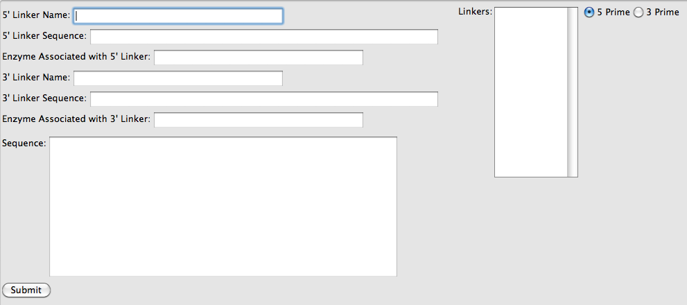

|  |
Back to Main Help Navigation Page
Linker sequences can be added to either the 5' or 3' end of the sequence. After selecting the add linkers button from the Mutation Panel, the current sequence in the sequence display box will be displayed in the sequence box on the Linker Panel.
Linkers are given a name. This name will be how the linker sequence appears in the box to the right. Enter the nucleotide sequence associated with the linker in the appropriate box. If there is a restriction enzyme associated with the linker (e.g. BglI), then it should be listed in the appropriate box.